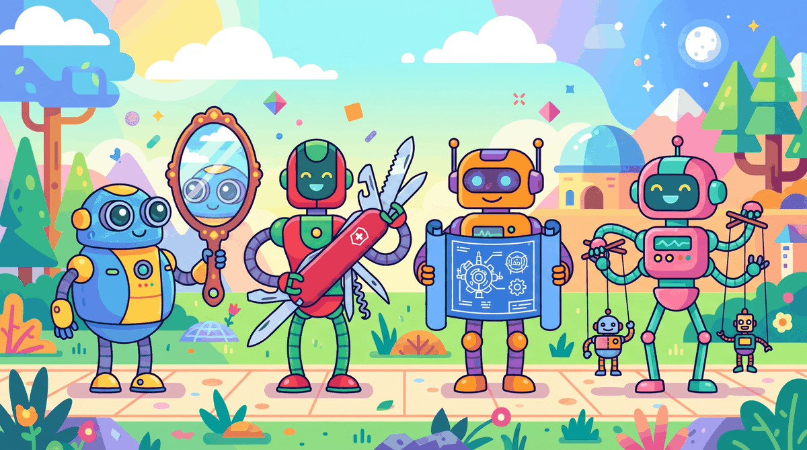

The best way to predict the future is to invent it. The second best way is to build an agent and let it figure things out.
Agent X, Self-Starting AI Agent
An AI agent is an LLM operating in a loop. Instead of producing a single response, an agent repeatedly perceives its environment, reasons about what to do, takes an action, and observes the result. This perception-reasoning-action cycle is the fundamental abstraction that transforms language models from passive text generators into active problem solvers. Understanding this loop, and the design patterns built on top of it, is essential for building any agentic system. The ReAct framework from Section 12.2 introduced the reasoning-plus-action pattern that agents formalize.
Prerequisites
This section assumes familiarity with LLM API basics from Section 11.1 and prompt engineering fundamentals from Section 12.1. An understanding of Section 8.1 reasoning from Section 12.2 will be particularly helpful, as the ReAct pattern builds directly on those ideas.
21.1.1 What Makes an Agent?
The term "agent" has been used loosely across the AI community, often applied to anything from a simple prompt chain to a fully autonomous system. To build effective agentic systems, we need precise definitions. An AI agent is a system that uses a language model to decide which actions to take and in what order, operating in a loop until a task is complete or a stopping condition is met. The critical distinction is autonomy in action selection: the model itself determines the next step rather than following a predetermined sequence.

The word "agent" comes from the Latin agere, meaning "to do." By that definition, most chatbots are really just "listeners" pretending to have a to-do list.
The Perception-Reasoning-Action Loop
Every agent, regardless of its complexity, follows the same fundamental cycle. The agent perceives its environment by receiving input (user messages, tool outputs, observations from previous actions). It then reasons about what to do next using the language model. Finally, it takes an action, which could be calling a tool, generating a response, or requesting more information. The results of that action become new perceptions, and the cycle repeats. depicts this fundamental loop.
Agents vs. Chains vs. Workflows
Understanding the spectrum from simple to complex orchestration helps clarify where agents fit. The hybrid ML/LLM decision framework from Chapter 13 can help determine whether a full agent is necessary or a simpler pipeline suffices. A chain is a fixed sequence of LLM calls with predetermined steps. A workflow uses conditional logic (if/else, loops) but with control flow defined by the developer. An agent gives the LLM itself control over the execution path. The model decides which tools to call, in what order, and when to stop.
| Aspect | Chain | Workflow | Agent |
|---|---|---|---|
| Control flow | Fixed sequence | Developer-defined conditionals | LLM-determined |
| Steps known in advance | Yes, always | Paths defined, selection dynamic | No, emergent |
| Determinism | High | Medium | Low |
| Error handling | Static retry logic | Branching on error type | Model reasons about recovery |
| Complexity | Simple | Moderate | High |
| Best for | Predictable pipelines | Structured tasks with variants | Open-ended problem solving |
Start with the simplest approach that works. Anthropic and other leading AI labs recommend using agents only when simpler patterns fail. Chains are easiest to debug and most predictable. Workflows add flexibility with manageable complexity. Agents provide maximum flexibility but introduce non-determinism, higher latency, and harder debugging. Choose the right level of autonomy for your use case.
Readers often confuse "agentic" with "autonomous" or even "AGI." An LLM agent is not a sentient system making independent decisions; it is a loop where a language model repeatedly selects the next action from a predefined set of tools. The model has no goals of its own, no persistent state beyond what the developer provides, and no ability to act outside its tool set. When an agent "decides" to call a search API, it is producing a structured text output that matches a tool schema. The autonomy is in action selection within a constrained loop, not in general intelligence. This distinction matters for both engineering (agents need guardrails, not trust) and for setting realistic expectations with stakeholders.
21.1.2 The Four Agentic Design Patterns
Andrew Ng identified four foundational agentic design patterns that appear across virtually all agent architectures. These patterns can be used individually or composed together, and understanding them provides a vocabulary for designing and analyzing agentic systems.

Pattern 1: Reflection
In the reflection pattern, the LLM reviews its own output and iteratively improves it. This can be as simple as asking the model to critique its response, or as sophisticated as having separate "generator" and "critic" roles. Reflection is powerful because it lets the model catch errors, improve quality, and refine its approach without external feedback.
# implement reflect_and_improve
import openai
client = openai.OpenAI()
def reflect_and_improve(task: str, max_rounds: int = 3) -> str:
"""Generate a response, then iteratively improve it via self-reflection."""
# Step 1: Generate initial response
draft = client.chat.completions.create(
model="gpt-4o",
messages=[{"role": "user", "content": task}]
).choices[0].message.content
for round_num in range(max_rounds):
# Step 2: Critique the current draft
critique = client.chat.completions.create(
model="gpt-4o",
messages=[
{"role": "system", "content": "You are a critical reviewer. Find flaws, "
"gaps, and areas for improvement. Be specific."},
{"role": "user", "content": f"Task: {task}\n\nDraft:\n{draft}\n\n"
f"Provide specific, actionable critique."}
]
).choices[0].message.content
# Step 3: Check if quality is satisfactory
if "no major issues" in critique.lower():
break
# Step 4: Revise based on critique
draft = client.chat.completions.create(
model="gpt-4o",
messages=[
{"role": "system", "content": "Revise the draft to address all critique points."},
{"role": "user", "content": f"Original task: {task}\n\n"
f"Current draft:\n{draft}\n\n"
f"Critique:\n{critique}\n\nRevised version:"}
]
).choices[0].message.content
return draftPattern 2: Tool Use
Tool use extends the LLM beyond text generation by giving it the ability to call external functions: searching the web, querying databases, executing code, sending emails, or interacting with any API. The model receives tool descriptions, decides when and which tools to call, and incorporates the results into its reasoning. This is covered in depth in Section 21.6.
Tool use is architecturally significant, not merely an API feature. When a model gains the ability to call external functions, it transitions from a closed system (bounded by its training data) to an open system that can interact with the live world. This is the same leap that distinguishes a calculator from a spreadsheet connected to a database. The model's role shifts from "answer generator" to "action coordinator," and the design constraints change accordingly: latency now depends on external services, reliability depends on tool robustness, and safety requires controlling what actions the model can take. Chapter 22 explores these architectural implications in depth, including standardized protocols like MCP and A2A that formalize tool interfaces.
Pattern 3: Planning
Planning involves the LLM decomposing a complex task into subtasks before executing them. Rather than acting step by step reactively, a planning agent creates an explicit plan, then executes each step while potentially revising the plan based on intermediate results. Plan-and-execute architectures, reflection loops, and tree search methods all fall under this pattern. Section 21.2 covers planning in detail.
Pattern 4: Multi-Agent Collaboration
In the multi-agent pattern, multiple LLM instances (each potentially with different system prompts, tools, or roles) collaborate to solve a problem. One agent might research while another writes; a supervisor agent might coordinate workers; or agents might debate to reach a consensus. Chapter 22 is dedicated entirely to multi-agent architectures. summarizes these four patterns.
21.1.3 The ReAct Framework
ReAct (Reasoning + Acting) is the most widely adopted agent architecture. We introduced ReAct as a prompting pattern in Section 12.2; here we build it into a full agent system with tool execution, state management, and error handling. Algorithm 1 formalizes the ReAct loop.
Input: user task T, tool set {tool_1, ..., tool_n}, LLM M, max steps S
Output: final answer or action result
1. Initialize context = [system_prompt, T]
2. for step = 1 to S:
a. Thought: response = M(context)
The LLM reasons about current state, what is known, what is needed
b. if response contains FINAL_ANSWER:
return extracted answer
c. Action: parse tool_name and arguments from response
d. Observation: result = execute(tool_name, arguments)
e. Append (Thought, Action, Observation) to context
3. return "Max steps reached without resolution"
The key insight is that the explicit reasoning in step 2a (the "Thought") dramatically improves decision quality compared to acting without thinking or thinking without acting. Each thought provides a chain-of-reasoning that is also valuable for debugging when the agent makes mistakes.
Why ReAct works better than pure chain-of-thought for agents. Pure chain-of-thought (CoT) reasons in a closed loop: the model thinks step by step but never checks its reasoning against reality. ReAct adds grounding by interleaving reasoning with real-world observations from tool calls. When the model hypothesizes "the bug is in the authentication module," CoT continues reasoning from that hypothesis whether or not it is correct. ReAct instead calls a search tool, observes actual code, and corrects course if the hypothesis was wrong. This grounding effect is why ReAct agents outperform CoT-only approaches on tasks requiring factual accuracy, external data, or multi-step verification. The trade-off is latency: each tool call adds seconds to the total execution time.
from typing import Callable
class ReActAgent:
"""Minimal ReAct agent: Thought -> Action -> Observation loop."""
def __init__(self, client, tools: dict[str, Callable], model: str = "gpt-4o"):
self.client = client
self.tools = tools
self.model = model
def run(self, task: str, max_steps: int = 10) -> str:
# Build tool descriptions for the system prompt
tool_desc = "\n".join(
f"- {name}: {func.__doc__}" for name, func in self.tools.items()
)
system_prompt = f"""You are a ReAct agent. For each step:
1. Thought: Reason about the current state and what to do next
2. Action: Call a tool using the format: ACTION: tool_name(args)
3. Wait for Observation (tool result)
When you have the final answer, respond: FINAL ANSWER: [your answer]
Available tools:
{tool_desc}"""
messages = [
{"role": "system", "content": system_prompt},
{"role": "user", "content": task}
]
for step in range(max_steps):
response = self.client.chat.completions.create(
model=self.model,
messages=messages
).choices[0].message.content
messages.append({"role": "assistant", "content": response})
# Check for final answer
if "FINAL ANSWER:" in response:
return response.split("FINAL ANSWER:")[1].strip()
# Parse and execute action
if "ACTION:" in response:
action_str = response.split("ACTION:")[1].strip()
observation = self._execute_action(action_str)
messages.append({
"role": "user",
"content": f"Observation: {observation}"
})
return "Max steps reached without final answer."
def _execute_action(self, action_str: str) -> str:
# Parse "tool_name(args)" format and execute
try:
name = action_str.split("(")[0].strip()
args_str = action_str.split("(", 1)[1].rsplit(")", 1)[0]
if name in self.tools:
return str(self.tools[name](args_str))
return f"Error: Unknown tool '{name}'"
except Exception as e:
return f"Error executing action: {e}"The ReAct implementation above uses text parsing for simplicity. In production, you would use the provider's native function calling API (covered in Section 21.6), which gives structured JSON outputs instead of requiring text parsing. The conceptual loop is the same: think, act, observe.
ReAct Trace Example
A typical ReAct trace shows the interleaved thought-action-observation pattern. Notice how the agent explicitly reasons before each action, and how observations feed back into the next reasoning step.
# Example trace for: "What is the population of the capital of France?"
Thought: I need to find the capital of France, then look up its population.
The capital of France is Paris, but let me verify and get the
current population figure.
Action: search("Paris population 2024")
Observation: Paris has a city population of approximately 2.1 million
and a metropolitan area population of about 12.3 million.
Thought: I now have the information. The capital of France is Paris,
with a city population of about 2.1 million. I should provide
both the city and metro figures for completeness.
FINAL ANSWER: The capital of France is Paris, with a city population
of approximately 2.1 million and a metropolitan area population
of about 12.3 million.21.1.4 Cognitive Architectures and State Machines
As agents grow more complex, the simple ReAct loop becomes insufficient. Cognitive architectures provide a richer framework for organizing agent behavior by introducing explicit state management, memory systems, and structured decision-making processes. A cognitive architecture defines how an agent thinks, not just what it thinks about.
Agent State Machines
Many production agents are best modeled as state machines, where the agent transitions between well-defined states based on its observations and decisions. This provides predictability and debuggability while still allowing the LLM to make autonomous decisions within each state. Figure 21.1.6 shows the agent state machine with its transitions.
# Define AgentState, AgentContext, StatefulAgent; implement __init__, run, _handle_planning
from enum import Enum
from dataclasses import dataclass, field
class AgentState(Enum):
PLANNING = "planning"
EXECUTING = "executing"
REFLECTING = "reflecting"
WAITING_FOR_HUMAN = "waiting_for_human"
COMPLETE = "complete"
ERROR = "error"
@dataclass
class AgentContext:
"""Tracks the full state of an agent's execution."""
task: str
state: AgentState = AgentState.PLANNING
plan: list[str] = field(default_factory=list)
completed_steps: list[str] = field(default_factory=list)
observations: list[dict] = field(default_factory=list)
current_step_index: int = 0
error_count: int = 0
max_errors: int = 3
class StatefulAgent:
"""Agent that operates as a state machine with explicit transitions."""
def __init__(self, client, tools):
self.client = client
self.tools = tools
self.transitions = {
AgentState.PLANNING: self._handle_planning,
AgentState.EXECUTING: self._handle_executing,
AgentState.REFLECTING: self._handle_reflecting,
AgentState.ERROR: self._handle_error,
}
def run(self, task: str) -> str:
ctx = AgentContext(task=task)
while ctx.state not in (AgentState.COMPLETE, AgentState.WAITING_FOR_HUMAN):
handler = self.transitions.get(ctx.state)
if handler:
ctx = handler(ctx)
else:
break
return self._format_result(ctx)
def _handle_planning(self, ctx: AgentContext) -> AgentContext:
# LLM creates a step-by-step plan
plan = self._call_llm(
f"Break this task into concrete steps:\n{ctx.task}"
)
ctx.plan = self._parse_plan(plan)
ctx.state = AgentState.EXECUTING
return ctx
def _handle_executing(self, ctx: AgentContext) -> AgentContext:
if ctx.current_step_index >= len(ctx.plan):
ctx.state = AgentState.REFLECTING
return ctx
step = ctx.plan[ctx.current_step_index]
try:
result = self._execute_step(step, ctx)
ctx.observations.append({"step": step, "result": result})
ctx.completed_steps.append(step)
ctx.current_step_index += 1
except Exception as e:
ctx.error_count += 1
ctx.state = AgentState.ERROR if ctx.error_count >= ctx.max_errors \
else AgentState.EXECUTING
return ctx
def _handle_reflecting(self, ctx: AgentContext) -> AgentContext:
# LLM reviews results and decides: complete or replan
assessment = self._call_llm(
f"Task: {ctx.task}\nCompleted: {ctx.completed_steps}\n"
f"Results: {ctx.observations}\n\n"
f"Is the task fully complete? If not, what remains?"
)
if "complete" in assessment.lower():
ctx.state = AgentState.COMPLETE
else:
ctx.state = AgentState.PLANNING # Replan with new context
return ctx21.1.5 Agent Memory Systems
Agents need memory beyond the single context window. We sketch the categories briefly here; Section 21.6 covers the full taxonomy, storage strategies, retrieval policies, and production patterns.
- Working memory: the live context window during a turn (system prompt, user message, tool results, reasoning traces). Bounded by the model's context limit; the engineering question is what to keep and what to evict.
- Episodic memory: records of past interactions stored outside the context window so the agent can recall what happened in earlier sessions. Typically a vector database keyed by user/session/topic.
- Semantic memory: extracted facts, preferences, and learned heuristics that persist across sessions. Distilled from episodic memory or populated by the agent's own reflection step.
- Procedural memory: skill libraries, tool descriptions, and learned routines the agent invokes by name. Often stored as structured templates or callable code rather than embeddings.
The hard problems (when to write, when to retrieve, how to compress, how to forget, how to prevent contamination across users) are the topic of Section 21.6.
21.1.6 Token Budget Management
Token management is one of the most practical challenges in building agents. Unlike a single-turn completion where you control the input size, agents accumulate context over many iterations. Without careful budgeting, agents hit context limits, lose important early context, or incur excessive costs.
Strategies for Managing Token Budgets
- Summarize tool outputs: Instead of including raw API responses, extract only the relevant fields. A search result page might be 10,000 tokens raw but only 200 tokens of useful information.
- Sliding window with summarization: Periodically summarize older conversation turns and replace them with a compact summary, keeping recent turns intact.
- Tiered context priority: Assign priorities to different message types. System prompts and the current task have highest priority; old tool results have lowest priority and are evicted first.
- Lazy loading: Instead of loading all context upfront, fetch information only when the agent needs it. Store tool descriptions in a separate index and inject only the ones the agent requests.
- Step limits: Set hard limits on the number of agent iterations. If the agent cannot solve a task in N steps, it should report what it found and ask for guidance.
| Strategy | Token Savings | Implementation | Risk |
|---|---|---|---|
| Summarize tool outputs | 50-90% | LLM-based or rule-based extraction | May lose relevant details |
| Sliding window | Variable | Drop oldest N messages | Loses early context |
| Tiered priority eviction | 30-60% | Score and rank all messages | Complex priority logic |
| Lazy tool loading | 20-40% | Tool registry with on-demand injection | Extra LLM call to select tools |
| Hard step limits | Bounded | Counter in agent loop | May not complete complex tasks |
The best agents are frugal with their context. Every token in the context window should earn its place. Production agents typically combine multiple strategies: summarizing tool outputs immediately, using a sliding window for conversation history, and imposing step limits as a safety net. The goal is to maintain the information density of the context while staying well within token limits.
21.1.7 Designing for Failure
Agents fail in ways that are qualitatively different from non-agentic systems. A simple chain either succeeds or produces an error. An agent can get stuck in loops, waste tokens on unproductive actions, misinterpret tool outputs, or take increasingly erratic actions as its context window degrades. Robust agent design requires anticipating and handling these failure modes. Chapter 28 covers how to observe and measure these failures in production.
Common Agent Failure Modes
- Infinite loops: The agent repeats the same action because it does not recognize that the result is unchanged. Always implement a maximum step counter.
- Tool misuse: The agent calls a tool with invalid arguments or misinterprets the output. Clear tool descriptions and structured error messages help.
- Goal drift: Over many steps, the agent gradually shifts away from the original task. Periodically re-injecting the original task description helps maintain focus.
- Context window overflow: The agent accumulates so much history that it cannot generate useful output. Token management strategies (above) are essential.
- Cascading errors: An early mistake propagates through subsequent steps, leading the agent further astray. Reflection checkpoints catch and correct errors early.
Show Answer
Show Answer
Show Answer
Show Answer
Show Answer
When building your first agent, start with one well-tested tool (for example, web search or code execution). Get the tool-calling loop working reliably before adding more tools. Agents with many poorly-tested tools fail in unpredictable ways.
- An AI agent is an LLM operating in a perception-reasoning-action loop, where the model determines the control flow rather than the developer.
- Prefer the simplest orchestration pattern that works: chains before workflows, workflows before agents.
- The four agentic design patterns (Reflection, Tool Use, Planning, Multi-Agent) are composable building blocks for all agent architectures.
- ReAct interleaves explicit reasoning with actions and observations, providing a structured and debuggable agent loop.
- Agent state machines combine the predictability of workflows with the flexibility of agents by defining explicit states and transitions.
- Three-tier memory (working, episodic, semantic) addresses different timescales of agent information needs.
- Token budget management is a critical production concern; combine output summarization, sliding windows, and step limits.
- Design for failure by implementing step limits, re-injecting task descriptions, adding reflection checkpoints, and handling cascading errors.
Who: An IT operations manager and a junior ML engineer at a 2,000-employee enterprise
Situation: The IT helpdesk received 300+ tickets daily. Tier-1 agents spent 40% of their time on routine issues (password resets, VPN troubleshooting, software installation requests) that followed well-documented runbooks.
Problem: A simple chatbot with static decision trees handled only 25% of tickets because users described problems in unpredictable ways ("my computer is being weird" vs. "Outlook keeps crashing after the latest Windows update").
Dilemma: A fully autonomous agent with access to Active Directory and device management tools could resolve tickets end-to-end but posed security risks (what if it disabled the wrong account?). A classification-only agent was safe but still required human execution of every resolution.
Decision: They built a ReAct-style agent with tiered autonomy: the agent could autonomously execute low-risk actions (check account status, look up device info, send KB articles), but required human approval for medium-risk actions (password resets, group membership changes) and could not perform high-risk actions (account deletion, admin privilege grants) at all.
How: Each tool was tagged with a risk level. The agent's system prompt enforced the approval workflow. A supervisor dashboard showed pending approvals with the agent's reasoning chain, allowing Tier-1 agents to approve with one click.
Result: The agent autonomously resolved 35% of tickets and pre-triaged another 40% (reducing Tier-1 handling time from 12 minutes to 3 minutes per ticket). Zero security incidents occurred in the first 6 months.
Lesson: Tiered autonomy (auto-execute low risk, human-approve medium risk, block high risk) lets you deploy agents safely while still capturing significant efficiency gains from automation.
Agentic Reasoning and Self-Improvement (2024-2026): Recent work explores agents that learn from their own execution traces, adapting their strategies without retraining the underlying model. Reflexion (Shinn et al., 2023) demonstrated verbal reinforcement learning where agents store failure reflections in episodic memory. Voyager (Wang et al., 2023) showed that agents can build a persistent skill library, composing new abilities from previously learned ones.
Open questions remain about how to balance exploration with exploitation in agentic settings and how to evaluate agents on long-horizon tasks where success depends on dozens of sequential decisions. The intersection of reasoning models (covered in Section 21.4) with self-improving agents is a particularly active area.
Exercises
Explain the difference between a chain, a router, and a full agent. For each, describe a concrete use case where it would be the most appropriate choice.
Answer Sketch
A chain follows a fixed sequence of steps (e.g., summarize then translate). A router selects one path from several based on input (e.g., classify intent then route to the right handler). A full agent decides which actions to take and in what order in a loop, continuing until the task is done (e.g., a research assistant that searches, reads, and synthesizes). Chains suit deterministic workflows; routers suit classification-driven dispatch; agents suit open-ended tasks with unknown step counts.
Andrew Ng identified four agentic design patterns: Reflection, Tool Use, Planning, and Multi-Agent Collaboration. For each pattern, describe one real-world scenario where it provides clear value over a simpler approach.
Answer Sketch
Reflection: a code-writing agent that reviews its own output for bugs before submitting. Tool Use: a customer support agent that queries a CRM database. Planning: a travel agent that decomposes a multi-city itinerary into bookable steps. Multi-Agent Collaboration: a content pipeline where one agent drafts, another fact-checks, and a third edits for style.
A ReAct agent keeps searching for information and never produces a final answer. Write a Python function run_react_loop() that implements a maximum-step limit and a "repeated action" detector that stops the loop if the agent calls the same tool with the same arguments twice in a row.
Answer Sketch
Maintain a list of (tool_name, arguments) tuples. After each action, compare with the previous entry. If they match, inject a prompt like 'You have repeated the same action. Synthesize what you know and provide a final answer.' Also enforce max_steps (e.g., 10) and return whatever partial answer the agent has produced when the limit is reached.
Implement a minimal three-state agent (PLANNING, EXECUTING, REFLECTING) using a Python dictionary to track state transitions. The agent should plan how to answer a user question, execute the plan step by step, and reflect on whether the result is satisfactory.
Answer Sketch
Use a while loop with a current_state variable. In PLANNING, call the LLM to produce a numbered list of steps. In EXECUTING, iterate through steps and call tools. In REFLECTING, ask the LLM whether the collected results answer the original question. Transition back to PLANNING if reflection says 'no' (with a max-retry limit).
Classify each of the following as episodic, semantic, or procedural memory: (a) "The user prefers Python over JavaScript." (b) "Last Tuesday the deployment failed because of a missing environment variable." (c) "To deploy to staging, first run migrations, then restart the service."
Answer Sketch
(a) Semantic memory: a distilled fact about the user. (b) Episodic memory: a timestamped record of a specific event. (c) Procedural memory: a learned action sequence that can be replayed.
What Comes Next
In the next section, Section 21.2: Planning & Agentic Reasoning, we explore tool use and function calling, the capability that allows agents to interact with external systems and APIs.
Yao, S. et al. (2023). "ReAct: Synergizing Reasoning and Acting in Language Models." ICLR 2023.
The paper that defined the reasoning-plus-acting paradigm for LLM agents. Shows how interleaving thought and action improves task completion. The most-cited reference in the AI agents literature.
A comprehensive survey covering agent architectures, capabilities, and applications. Organizes the field into a clear taxonomy. Best single resource for understanding the agent landscape.
An extensive survey with emphasis on cognitive architectures and social simulation. Covers both single-agent and multi-agent scenarios. Complements the Wang et al. survey with different perspectives.
Sumers, T.R. et al. (2024). "Cognitive Architectures for Language Agents." TMLR.
Proposes a formal framework (CoALA) for understanding language agent architectures. Draws on cognitive science to organize agent design patterns. Essential for researchers designing principled agent systems.
Anthropic (2024). "Building Effective Agents."
Anthropic's practical guide to building agents with Claude, covering common patterns and best practices. Includes concrete implementation advice. Must-read for teams building production agents with Claude.